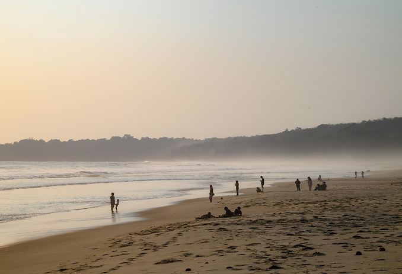
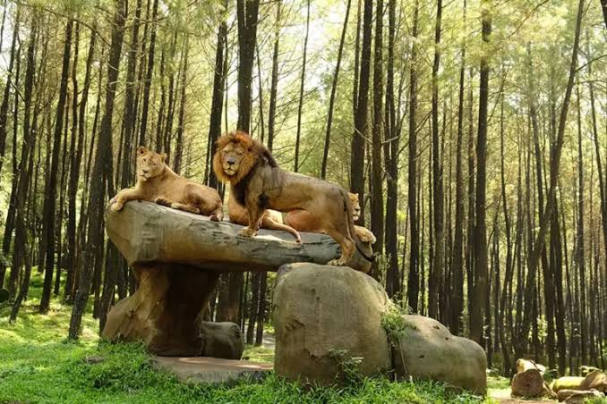
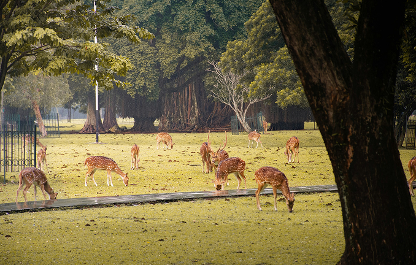
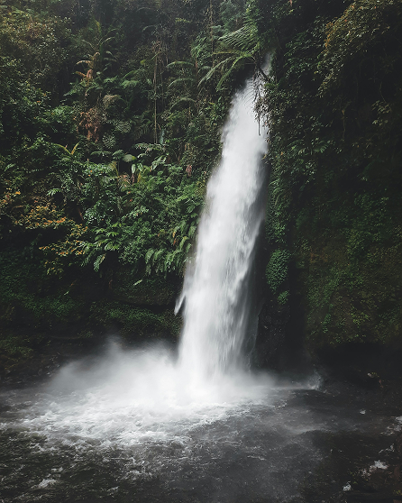

Tempat Wisata
Tempat Wisata yang sudah kamu simpan untuk dikunjungi nanti.

Pantai Sawarna
Banten
4.8 (320 Ulasan)

Taman Safari Indonesia
Cisarua, Kab Bogor
4.7 (72.715 Ulasan)

Kebun Raya Bogor
Bogor
4.7 (105.112 Ulasan)

Curug Cimahi
Bandung
4.7 (1.550 Ulasan)